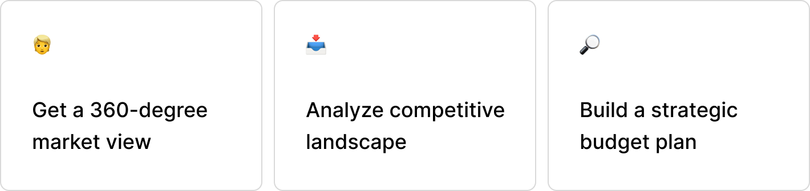
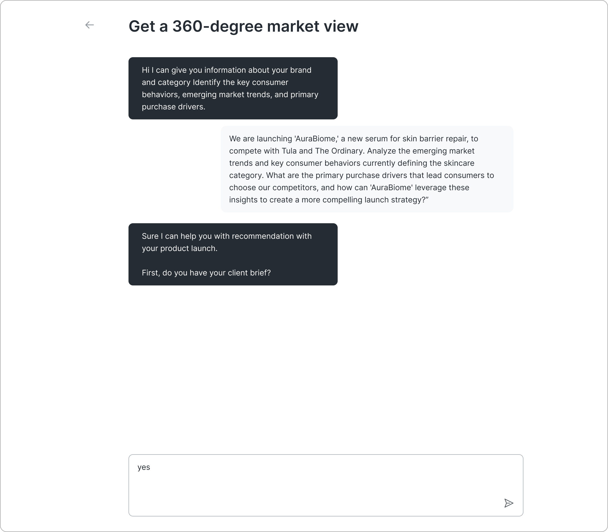

Agentic Driven Design

The Challenge
The advertising stack at the company had grown into a collection of siloed tools, each doing its job well but in isolation. Each product module, as part of the larger ecosystem, had a data source with different schemas, different levels of granularity.
The question wasn't just "how do we build a chat?" — it was "how do we make the AI know which data answers which question?" We needed a routing and synthesis layer, not just a UI wrapper. Each module would have to have its own agent. The complexity had to disappear for the end user, even if it lived under the hood.

Fragmented tools and data sources
Solution
Build a single conversational AI interface that abstracts the fragmentation underneath. The AI would have to reason across multiple data sources pulling from the right tool, and synthesizing a coherent answer.
One natural-language entry point for any advertising question, regardless of where the data lives. The goal wasn't to replace the tools it was to make their combined intelligence accessible to anyone, instantly.

AI assistant welcome screen
Inputs vs Outputs
For every module we considered what the input in the AI chat would be and what the output AI response should be.
The scripting process was about documenting institutional knowledge. Media planners, analysts, and strategists all contributed questions from their domain. Scripts became the bridge between human expertise and machine intelligence.

Mapping user inputs to AI outputs
Prompts
We included deterministic prompts that previous research studies uncovered as questions many of our users will ask and need answers to.

Quick access shortcuts for common queries
Guided Experience
Users were guided through the chat with clarifying questions the AI would ask. This way the responses would not only serve the user better it would allow for filtering of the huge datasets running in the background.

AI asking clarifying questions to refine results
Long-term Agentic Design
Each tool in our product line would be surfaced through the AI responses to help our users strategically plan their campaigns. Again the clarifying questions the AI would ask further filtered our large datasets.

Future state with full agent integration
Short-term Agentic Design
To move quickly we designed a short term execution that allowed users to jump into our AI Research Assistant and ask any questions they wanted or explore our multiple tools through the AI guided experience.
If a user chose to explore what was available as a tool in our platform again they were offered pre-defined prompts. Whether they used the pre-defined prompts or wrote their own in the chat, they would be guided to the specific module that would best serve their goals.

MVP chat modal interface